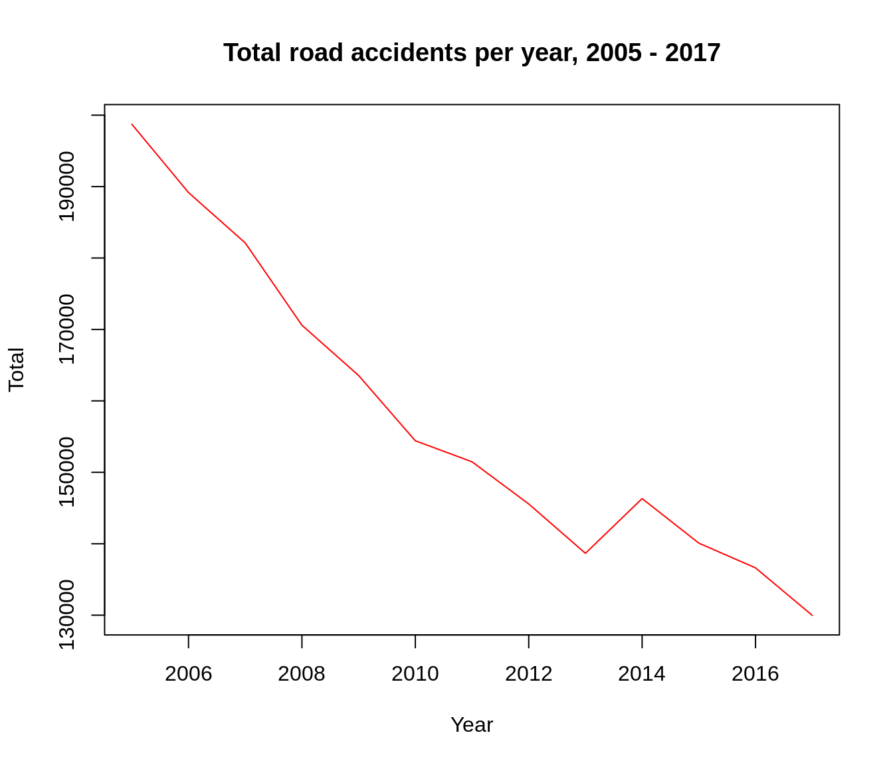
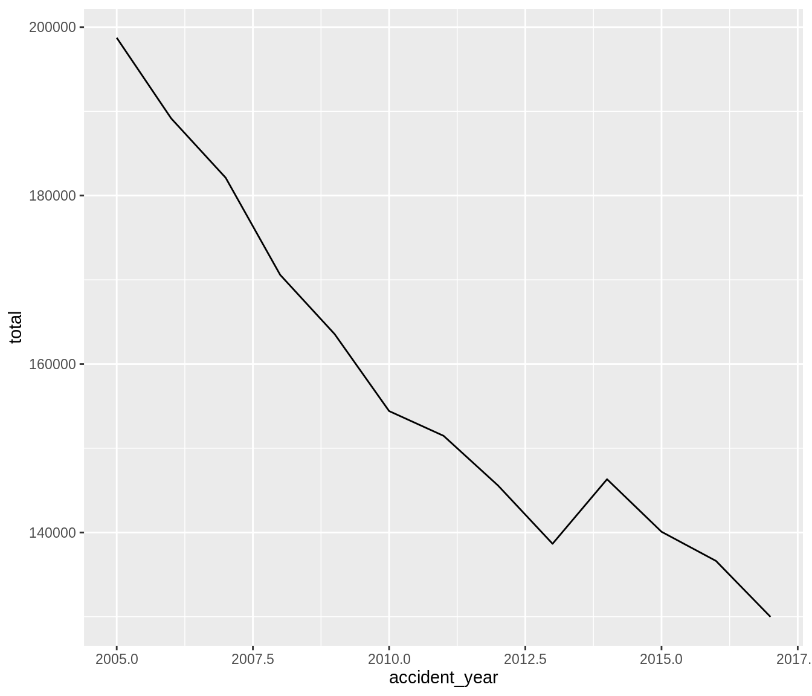
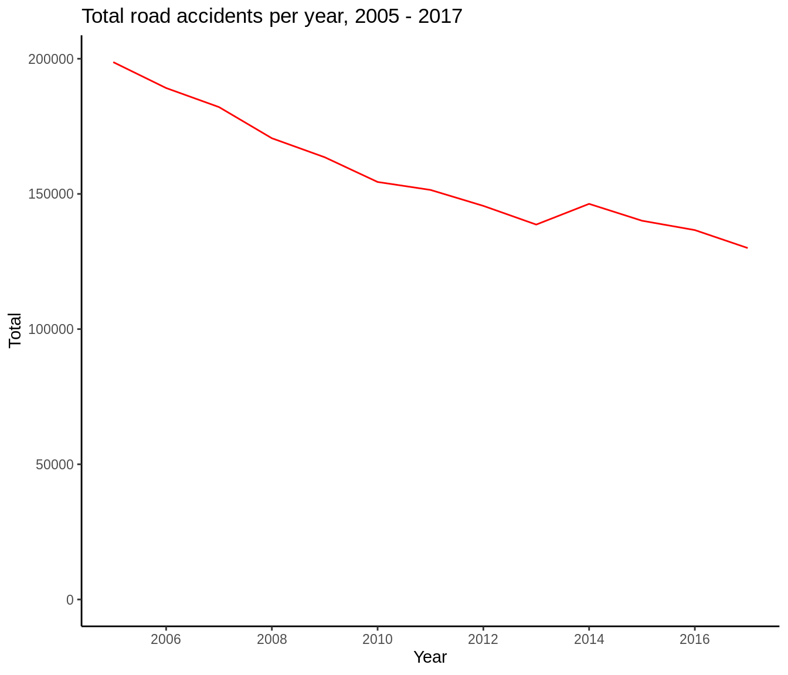
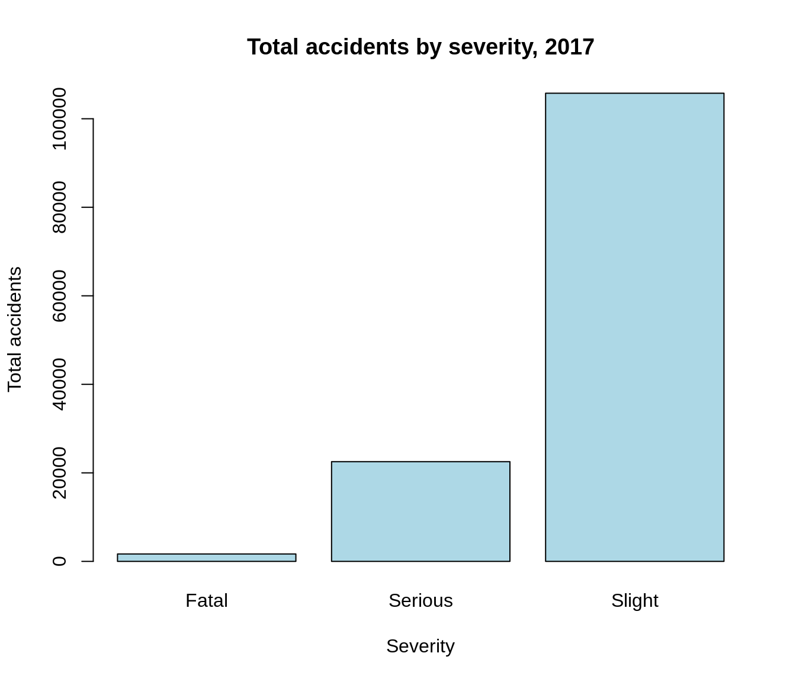
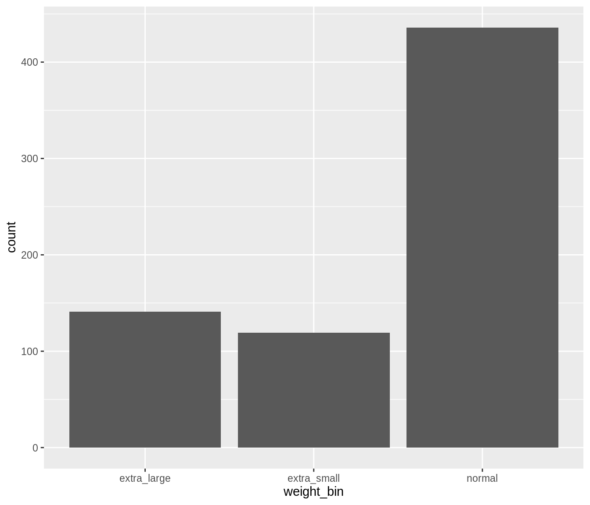
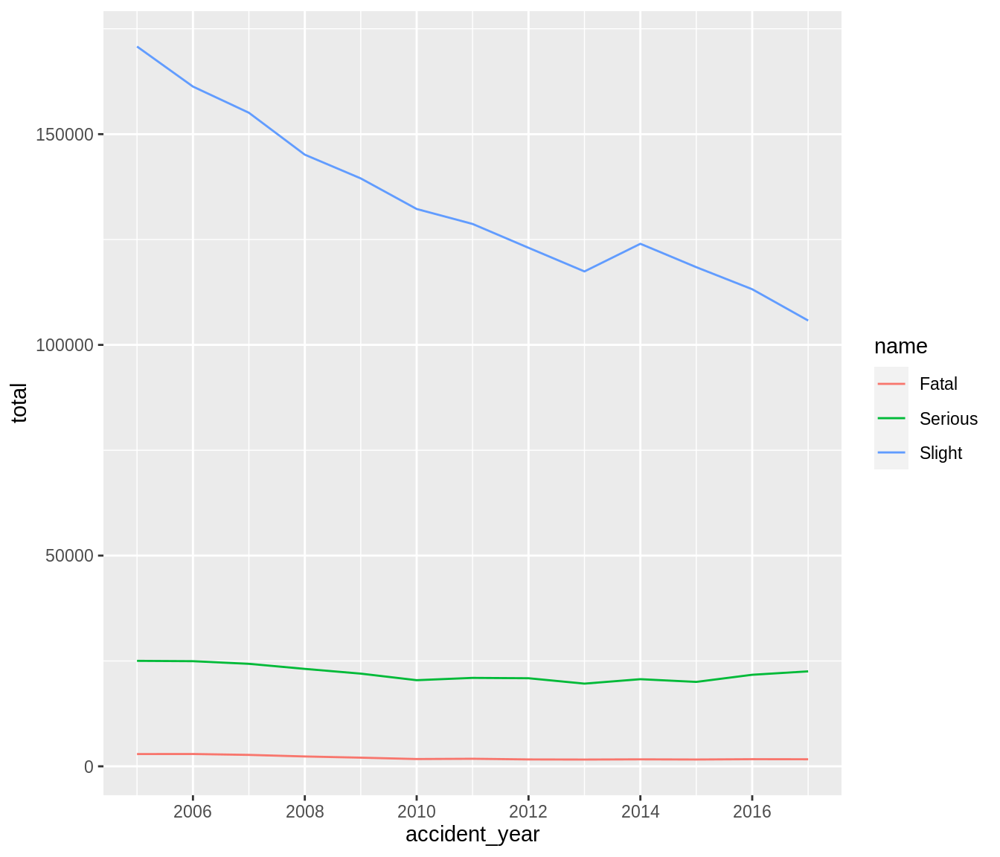
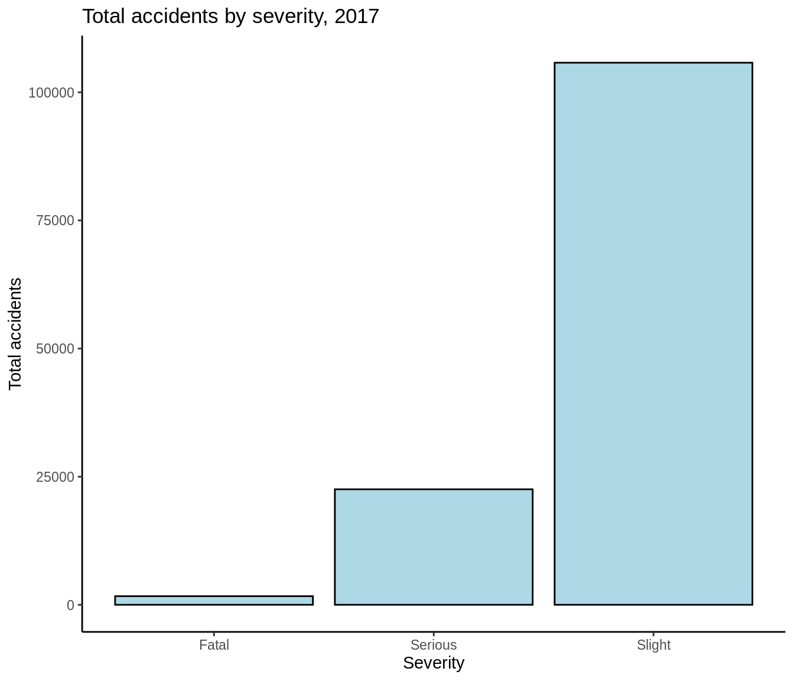
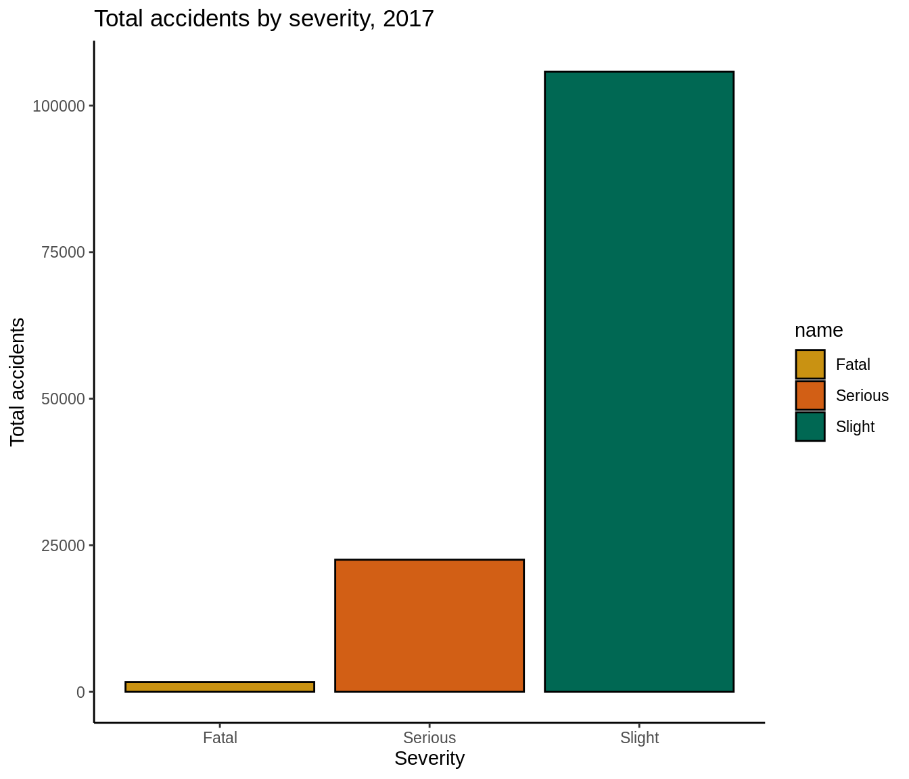
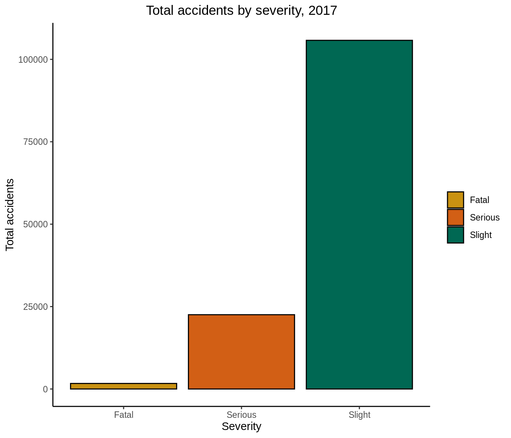

Chapter 7 Plotting and Data Visualisations
This chapter provides some examples of how to visualise data in R.
For charts, we’ll look at a few examples of how to create simple charts in base R but this chapter will focus mainly in using {ggplot2} to plot charts. For maps, we’ll look at how to produce static choropleth maps using {ggplot2} and how to produce interactive maps using {leaflet}.
7.1 Plotting in base R
Before we look at using {ggplot2}, we’ll look at how to plot simple charts using functions in base R. We’ll use road accident data from 2005 to 2017 to demonstrate how to create line and bar charts.
# read in road accident data
road_acc <- readr::read_csv(
file = "data/road_accidents_by_year_and_severity.csv")
#> Parsed with column specification:
#> cols(
#> accident_year = col_double(),
#> accident_severity_id = col_double(),
#> name = col_character(),
#> total = col_double()
#> )
head(road_acc)| accident_year | accident_severity_id | name | total |
|---|---|---|---|
| 2005 | 1 | Fatal | 2913 |
| 2005 | 2 | Serious | 25029 |
| 2005 | 3 | Slight | 170793 |
| 2006 | 1 | Fatal | 2926 |
| 2006 | 2 | Serious | 24946 |
| 2006 | 3 | Slight | 161289 |
7.1.1 Line charts in base R
We want to plot a line chart of total road accidents against year. First we need to group our data by accident year and summarise to get a total sum of accidents for each year:
road_acc_total <- road_acc %>%
dplyr::group_by(accident_year) %>%
dplyr::summarise(total = sum(total))We’ll now use the base R function ‘plot’, specifying the x and y axis and well as the plot type ‘l’ for line charts:

We can make our plot look better by specifying a colour, labelling the axes and giving our plot a title:
plot(
x = road_acc_total$accident_year,
y = road_acc_total$total,
type = "l",
col = "red",
xlab = "Year",
ylab = "Total",
main = "Total road accidents per year, 2005 - 2017"
)
We can also force our plot to start at 0:
plot(
x = road_acc_total$accident_year,
y = road_acc_total$total,
type = "l",
col = "red",
xlab = "Year",
ylab = "Total",
main = "Total road accidents per year, 2005 - 2017",
ylim=c(0, max(road_acc_total$total))
)
7.1.2 Bar charts in base R
We want to plot a bar chart showing the total number of accidents of each severity in 2017. First let’s filter the road accidents data for 2017:
| accident_year | accident_severity_id | name | total |
|---|---|---|---|
| 2017 | 1 | Fatal | 1676 |
| 2017 | 2 | Serious | 22534 |
| 2017 | 3 | Slight | 105772 |
To create a bar chart, we use the base R function ‘barplot’ and then specify the variable we want to plot as the height argument:

This isn’t very useful as we can’t see what the different severity types are. So we can specify these in the names.arg argument, as well as add a few extra features to make the plot look better:
barplot(height = road_acc_2017$total,
names.arg = c("Fatal", "Serious", "Slight"),
width = 2, #width of the bars
col = "lightblue",
xlab = "Severity",
ylab = "Total accidents",
main = "Total accidents by severity, 2017")
7.2 Plotting withh {ggplot2}
What is {ggplot2}?
The ‘gg’ in {ggplot2} stands for ‘grammar of graphics’. This is a way of thinking about plotting as having grammar elements that can be applied in succession to create a plot. This is the idea that you can build every graph from the same few components: a dataset, geoms (marks representing data points), a co-ordinate system and some other things.
The ggplot() function from the {ggplot2} package is how you create these plots. You build up the graphical elements using the + symbol. Think about it as placing down a canvas and then adding layers on top.
Why should I use {ggplot2} instead of the plot functions in base R?
As with most things in R, there are multiple ways to do the same thing. This applies to creating visualisations as well. As will be demonstrated below we can replicate the graphs we have created above using {ggplot2} instead, pretty well.
One method is not necessarily better than the other, but at DfT we advocate using {ggplot2} when plotting charts. There is consistency in the way that {ggplot2} works which makes it easier to get to grips with for beginners. It is also part of the {tidyverse} which we have used earlier on in this cookbook so it shares the underlying design philosophy, grammar, and data structures.
7.2.1 Line charts with {ggplot2}
When plotting with {ggplot2}, we start with the ggplot() function which creates a blank canvas, then the next layer we add is the plot type. For line charts, this would be ggplot() + geom_line(). Within these functions, we specify our data and our aesthetic mappings i.e. what variables to map to the x and y axes from the specified data. If we were create a simple line chart for total accidents against year, the code would read as follows:

So a reusuable template for making graphs would be as below, with the bracketed sections in the code replaced with a dataset, a geom function and a collection of mappings:
ggplot(data = name_of_dataset) + geom_function(mapping = aes())
You can find a range of different plot types available in {ggplot2}, as well as tips on how to use them in the {ggplot2} cheatsheet (https://www.rstudio.com/wp-content/uploads/2016/11/ggplot2-cheatsheet-2.1.pdf).
Let’s create the same the line chart we created with base R, showing total road accidents against year:
ggplot(data = road_acc_total) +
geom_line(aes(x = accident_year, y = total), col = "red") +
xlab("Year") +
ylab("Total") +
ggtitle("Total road accidents per year, 2005 - 2017") +
scale_x_continuous(breaks = seq(2000, 2017, 2)) +
expand_limits(y=0) +
theme_classic()
Here we have specified the colour of the line (notice this is outside of the aes() function). We have also labelled the x and y axes and given the plot a title. We have used scale_x_continuous() function to specify the intervals in the year variable and have used a theme to set the style of our plot (more on this later).
7.2.2 Aesthetic mappings
To get more insight into our data, we can add a third variable to our plot by mapping it to an aesthetic. This is a visual property of the objects in our plot such as the size, the shape or the colour of our points. For example, if we want to see the total number of road accidents by severity type against year, we can map the ‘name’ variable to the colour aesthetic:
ggplot(data = road_acc) +
geom_line(mapping = aes(x = accident_year, y = total, colour = name)) +
scale_x_continuous(breaks = seq(2000, 2017, 2))
So unlike before, we specify the colour within the aes() function, rather than outside of it.
7.2.3 Bar charts with {ggplot2}
When creating bar charts with {ggplot2}, we can use geom_bar() or geom_col(). geom_bar() makes the height of the bar proportional to the number of cases in each group while geom_col() enables the heights of the bars to represent values in the data. So if your data is not already grouped you can use geom_bar() like so:
| species | combat_power | hit_points | weight_kg | weight_bin | height_m | height_bin | fast_attack | charge_attack | date_first_capture | time_first_capture |
|---|---|---|---|---|---|---|---|---|---|---|
| abra | 101 | 20 | 17.18 | normal | 0.85 | normal | zen_headbutt | shadow_ball | 31 May 1977 | 20:59:33 |
| abra | 81 | 16 | 25.94 | extra_large | 1.00 | normal | zen_headbutt | shadow_ball | 24 February 1973 | 10:18:40 |
| bellsprout | 156 | 32 | 5.85 | extra_large | 0.80 | normal | acid | sludge_bomb | 21 June 1924 | 08:06:55 |
| bellsprout | 262 | 44 | 5.42 | extra_large | 0.82 | normal | acid | sludge_bomb | 01 August 1925 | 11:18:28 |
| bellsprout | 389 | 50 | 3.40 | normal | 0.66 | normal | vine_whip | wrap | 06 August 1952 | 21:11:42 |
| bellsprout | 433 | 59 | 6.67 | extra_large | 0.84 | normal | acid | power_whip | 17 January 1915 | 13:30:41 |

This has grouped our data by weight_bin with the height of the bars representing the number of pokemon in each weight bin.
Let’s recreate the total accidents by severity chart, now using {ggplot2} instead:
ggplot(data = road_acc_2017) +
geom_col(mapping = aes(x = name, y = total), fill = "lightblue", col = "black")+
xlab("Severity") +
ylab("Total accidents") +
ggtitle("Total accidents by severity, 2017")+
theme_classic()
Here we have used geom_col() instead but our data is already grouped so we simply want the height of the bars to represent the values in the data i.e. the number of accidents of each type of severity.
You could also use geom_bar() in this situation but you would need to add an extra argument: stat = “identity”.
ggplot(data = road_acc_2017) +
geom_bar(mapping = aes(x = name, y = total), fill = "lightblue", col = "black", stat = "identity")+
xlab("Severity") +
ylab("Total accidents") +
ggtitle("Total accidents by severity, 2017") +
theme_classic()
7.3 DfT colours
So far we’ve used colours built into R and referred to them by name e.g. red, lightlue etc. In order to make charts using DfT colours, we can specify what colours we want using hexcodes. For example, for the previous bar chart we can set the levels of severity to different DfT colours.
ggplot(data = road_acc_2017) +
geom_col(mapping = aes(x = name, y = total, fill = name), col = "black")+
xlab("Severity") +
ylab("Total accidents") +
ggtitle("Total accidents by severity, 2017") +
theme_classic() +
scale_fill_manual(values = c("#C99212", "#D25F15", "#006853"))
Here we map the name variable to the fill argument within the aesthetic.
7.4 Themes
We mentioned themes earlier. Themes are used to set the style of your plot and can give your plots a consistent customized look. You can customise things such as titles, labels, fonts, background, gridlines, and legends. We have been using theme_classic() so far but {ggplot2} has a number of built-in themes that you can use for your plots available here: https://ggplot2.tidyverse.org/reference/ggtheme.html
You can modify aspects of a theme using the theme() function. For example, for our previous accidents plot, we can remove the legend title and move the position of the plot title.
ggplot(data = road_acc_2017) +
geom_col(mapping = aes(x = name, y = total, fill = name), col = "black")+
xlab("Severity") +
ylab("Total accidents") +
ggtitle("Total accidents by severity, 2017") +
theme_classic() +
scale_fill_manual(values = c("#C99212", "#D25F15", "#006853"))+
theme(legend.title = element_blank(),
plot.title = element_text(hjust = 0.5))
7.4.1 Custom DfT Theme
Instead of using the built-in themes, we can create our own theme to apply to our plots. Below I have created a ‘DfT theme’ for line charts which sets things such as the font types, sizes, axes lines and title positions to make the plot consistent with what we might put in a DfT publication.
You can adjust and tweak this theme and the colours to create plots in the correct style for your own publications.
# set DfT colours
dft_colour <- c("#006853", # dark green
"#66A498", # light green
"#D25F15", # orange
"#E49F73", # light orange
"#C99212", # yellow
"#E9D3A0", # pale yellow
"#0099A9", # blue
"#99D6DD") # light blue
# create theme
# note: 'sans' in R refers to the font 'Arial' in Windows
theme_dft <- ggplot2::theme(axis.text = element_text(family = "sans", size = 10, colour = "black"), # axis text
axis.title.x = element_text(family = "sans", size = 13, colour = "black", # x axis title
margin = margin(t = 10)),
axis.title.y = element_blank(),
plot.title = element_text(size = 16, family = "sans", hjust = 0.5),
plot.subtitle = element_text(size = 13, colour = "black", hjust = -0.05,
margin = margin(t = 10)),
legend.key = element_blank(), # make the legend background blank
legend.position = "bottom", # legend at the bottom
legend.direction = "horizontal", # legend horizontal
legend.title = element_blank(), # remove legend title
legend.text = element_text(size = 9, family = "sans"),
axis.ticks = element_blank(), # remove tick marks
panel.grid = element_blank(), # remove grid lines
panel.background = element_blank(), # remove background
axis.line.x = element_line(size = 0.5, colour = "black"))
# use the DfT colours and the DfT theme for the accidents by severity line chart
ggplot(data = road_acc) +
geom_line(mapping = aes(x = accident_year, y = total, colour = name), size = 1.5) +
labs(title = "Accidents by severity, 2005 to 2017",
x = "Accident Year",
y = "")+
scale_x_continuous(breaks = seq(2005, 2017, 2))+
scale_colour_manual(values = dft_colour) + #here is where you apply the dft colours
theme_dft #here we specify our custom theme
7.5 Interactive charts with {plotly}
{plotly} is a graphing library which makes interactive html graphs. It uses the open source JavaScript graphing library plotly.js. It is great for building dashboards or allowing the user to interact with the data themselves.
{plotly} is not necessarily good for publications as the charts are html but can be useful for exploratory analysis or QA notes. It allows you to zoom into certain parts of the chart and toggle between different categories.
It can be used in two ways - either with {ggplot2} (easier option) or using the plot_ly() wrapper directly which gives you more control.
7.5.1 {plotly} with {ggplot2}
Taking our previous accidents by severity plot, we can simply assign this to an object and use the ggplotly() function to make it interactive.
library(plotly)
road_acc_chart <- ggplot(data = road_acc) +
geom_line(mapping = aes(x = accident_year, y = total, colour = name), size = 1.5) +
labs(title = "Accidents by severity, 2005 to 2017",
x = "Accident Year",
y = "")+
scale_x_continuous(breaks = seq(2005, 2017, 2))+
scale_colour_manual(values = dft_colour) +
theme_dft
plotly::ggplotly(road_acc_chart)
#> Warning: plotly.js does not (yet) support horizontal legend items
#> You can track progress here:
#> https://github.com/plotly/plotly.js/issues/537.5.2 plot_ly()
Using plot_ly() is similar to {ggplot2} in some ways as we build the plot in layers but we use the pipe operator rather than a plus sign, and the ~ sign before the variables in our data:
plotly::plot_ly(road_acc, x = ~accident_year, y = ~total) %>% # specify the data and x and y axes
plotly::add_lines(color = ~name, colors = dft_colour[1:3]) %>% # colour lines by severity
plotly::layout(title = "Accidents by severity, 2005 to 2017",
xaxis = list(title = "Accident Year"),
yaxis = list(title = ""))You can find more information about using {plotly} in R from the following websites:
Graphing library with example code: https://plot.ly/r/
Cheat sheet: https://images.plot.ly/plotly-documentation/images/r_cheat_sheet.pdf
E-book: https://plotly-r.com/index.html
7.6 Mapping in R
There are a wide range of packages you can use to produce maps in R. For static choropleth maps, we’re going to focus on using {ggplot2} which we are now familiar with.
7.6.1 Mapping with {ggplot2}
To complete.
7.6.2 Mapping with {leaflet}
The {leaflet} package can be used to create interactive maps in R. Similar to {ggplot2}, you start with a base map and then add layers (i.e. features). We’re going to map some search and rescue helicopter data, using the longitude and latitude.
library(leaflet)
sarh <- readr::read_csv(file = "data/SARH_spatial.csv")
#> Parsed with column specification:
#> cols(
#> Base = col_character(),
#> Unique_ID = col_character(),
#> Cat = col_character(),
#> latitude_new = col_double(),
#> longitude_new = col_double(),
#> Place = col_character(),
#> Domain = col_character()
#> )
head(sarh)| Base | Unique_ID | Cat | latitude_new | longitude_new | Place | Domain |
|---|---|---|---|---|---|---|
| Sumburgh | Sumb6559171 | Rescue/Recovery | 61.10333 | 1.073333 | Cormorant Alpha | Maritime |
| Caernarfon | Caer6580171 | Support | 51.88602 | -5.307241 | Whitesands Bay | Coastal |
| Humberside | Humb6587171 | Rescue/Recovery | 53.39779 | -1.903712 | Kinder Scout | Land |
| Prestwick | Pres6613171 | Rescue/Recovery | 56.33115 | -4.618574 | Beinn A Chroin | Land |
| Inverness | Inve6614171 | Rescue/Recovery | 56.80076 | -5.034575 | Ben Nevis | Land |
| Newquay | Newq6617171 | Search only | 50.04000 | -5.636667 | Porthcurno | Maritime |
#plot the interactive map using leaflet
leaflet::leaflet(data = sarh) %>%
leaflet::addProviderTiles(provider = providers$Esri.NatGeoWorldMap) %>% #select the type of map you want to plot
leaflet::addMarkers(lng = ~longitude_new,
lat = ~ latitude_new,
popup = ~ htmltools::htmlEscape(Base), # what appears when you click on a data point
label = ~ htmltools::htmlEscape(Domain) # what appears when you hover over a data point
)If you want to save this as a static map, you could simply export is an image. More information on using {leaflet} in R can be found here: https://rstudio.github.io/leaflet/